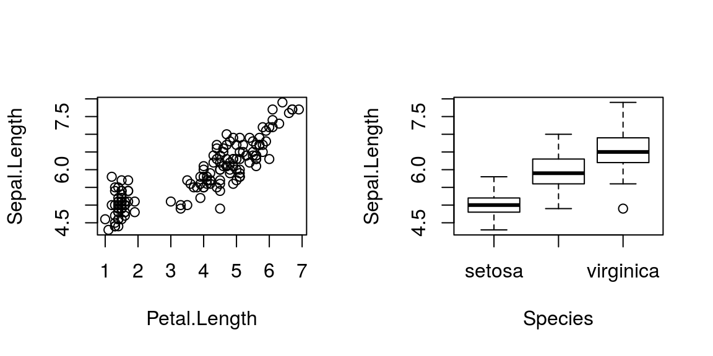

Permet la diffusion rapide de nouvelles méthodes statistiques. La qualité d’un package est améliorée grâce au retour de la communauté.
Pour installer un package, par exemple le package car , il suffira d’éxécuter une seule fois la commande :
install.packages('car')Puis avant chaque utilisation du package
library('car')data("iris"); par(mfrow=c(1,2))
plot(Sepal.Length~Petal.Length, data=iris)
plot(Sepal.Length~Species, data=iris)